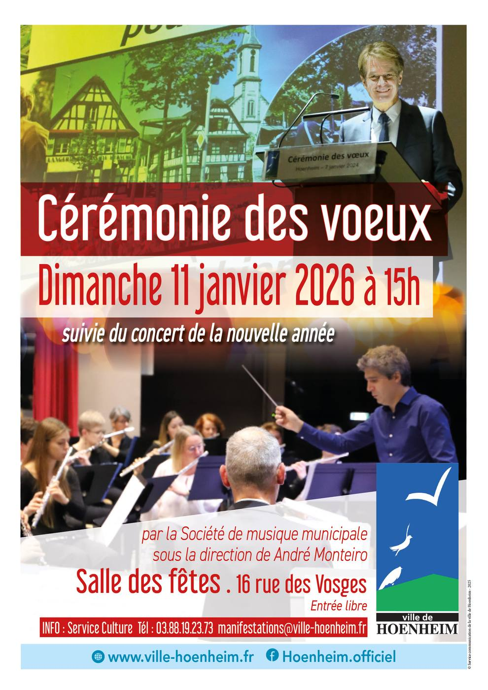

- Cet événement est terminé
Cérémonie des vœux du Maire
11 janvier à 15 h 00 min - 17 h 00 min
Navigation de l'événement

La cérémonie des vœux du maire à la population aura lieu le dimanche 11 janvier 2026 à 15h à la salle des fêtes de Hoenheim, suivie du concert de la nouvelle année par la Société de musique municipale sous la direction de André Monteiro.
Entrée libre